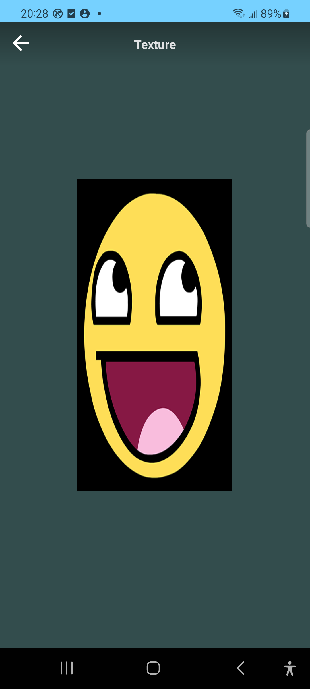

纹理
纹理是指在计算机图形学中，为了增加物体表面的细节和真实感而使用的一种技术。纹理是一个2D图片，（甚至也有1D和3D的纹理）,可以简单理解为物体表面的图案。
在OpenGL ES中，纹理实际上是一个可以被采样的复杂数据集合，是 GPU 的图像数据结构，纹理分为2D纹理、2D纹理数组、3D纹理和立方图纹理。
在Android GLES中，主要分为外部GLES纹理(GL_TEXTURE_EXTERNAL_OES)与传统GLES纹理 (GL_TEXTURE_2D)。
纹理映射
纹理映射(Texture Mapping)，又称纹理贴图，是将纹理空间中的纹理像素映射到屏幕空间中的像素的过程。简单来说，就是把一幅图像贴到三维物体的表面上来增强真实感，可以和光照计算、图像混合等技术结合起来形成许多非常漂亮的效果。在OpenGL中来说，就是将纹理坐标所指定的纹理区域，映射到顶点坐标对应的渲染区域。
坐标
OpenGL中常用的坐标系有：顶点坐标、纹理坐标，屏幕坐标等，对坐标的理解，是渲染绘制图形的基础。
顶点坐标

首先明确OpenGL是右手坐标系，上图中的右手坐标系：伸开右手，大拇指指向X轴正方向，食指指向Y轴正方向，其他三个手指指向Z轴正方向。
而顶点坐标(Vertex Coordinate)，也叫顶点位置，是顶点在空间中的位置，通常用(x,y,z)表示，其中x、y、z都是浮点数，范围通常是[-1,1]。如图：
纹理坐标
纹理坐标(Texture Coordinate)，也叫UV坐标，是为了将纹理映射到三维几何体上，需要定义一个坐标系。纹理坐标通常用(u,v)表示，其中u和v是二维图像的水平和垂直轴坐标，范围通常是[0,1]。
它的坐标原点位于左下角，水平向右为S轴，竖直向上为Y轴。
屏幕坐标
屏幕坐标系，就是应用在设备屏幕上的坐标系，也是图形最终显示的地方。
水平向右为X轴，竖直向下为Y轴。
从纹理坐标系和屏幕坐标系看出，图像默认的原点是在左上角，而OpenGL的纹理读取数据是从左下角开始，所以会出现图像上下颠倒的现象。要得到正确的图像，只要对纹理坐标进行上下翻转就可以。
纹理采样
在渲染过程中，OpenGL会通过插值算法将纹理坐标与几何体的每个片元(像素)进行对应，然后从纹理中提取颜色信息，这一过程称为纹理采样。
常见的环绕方式：
| 环绕方式 | 描述 |
|---|---|
| GL_REPEAT | 纹理的默认行为。重复纹理图像。 |
| GL_MIRRORED_REPEAT | 和GL_REPEAT一样，但每次重复图片是镜像放置的。 |
| GL_CLAMP_TO_EDGE | 纹理坐标会被约束在0到1之间，超出的部分会重复纹理坐标的边缘，产生一种边缘被拉伸的效果。 |
| GL_CLAMP_TO_BORDER | 超出的坐标为用户指定的边缘颜色。 |
当纹理坐标超出默认范围时，每个选项都有不同的视觉效果输出。
纹理过滤
渲染一个图像，不能保证绘制的实际大小就是图片的原本大小，都是需要进行缩放。OpenGL中，只指定了顶点数据，中间点都是通过OpenGL内部采用插值器进行计算。这种插值方式，叫做纹理过滤。
纹理过滤常用的选项有两个：GL_NEAREST和GL_LINEAR。
GL_NEAREST：邻近过滤(Nearest Neighbor Filtering)是OpenGL默认的纹理过滤方式。当设置为GL_NEAREST的时候，OpenGL会选择中心点最接近纹理坐标的那个像素。
返回的颜色是距离纹理坐标最近的颜色。
GL_LINEAR：线性过滤(Linear Filtering)，它会基于纹理坐标附近的纹理像素，计算出一个插值，近似出这些纹理像素之间的颜色。
返回的颜色是临近像素的混合色。
两种纹理过滤的效果：
GL_NEAREST会产生颗粒状的图像，能看到组成纹理的像素而GL_LINEAR则更平滑，产生更加真实的效果。
实现
基本步骤
- 加载纹理：将外部纹理加载到内存
- 生成纹理对象：使用
glGenTextures()在OpenGL中生成纹理对象，并绑定到合适的纹理目标 - 设置纹理参数：通过
glTexParameteri()设置纹理参数，如环绕方式、过滤方式等 - 上传纹理数据：使用
glTexImage2D()将纹理数据上传到OpenGL - 应用纹理：在渲染时，通过着色器和纹理坐标将纹理映射到三维物体的表面
示例代码
- 生成纹理，并加载图像数据到纹理：
1 | //1. gen texture |
- 纹理采样的片段着色器：
1 |
|
其他draw的代码和以前类似，这里就不累述了。
效果如图：

看着效果图是不是有点拉伸，这个后续通过投影矩阵来解决。